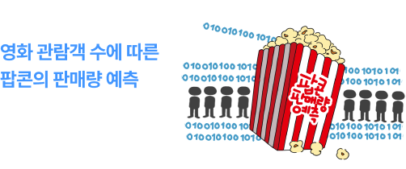
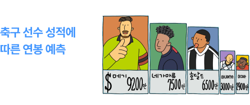

개념 학습
지도학습의 유형
회귀
회귀(regression)는 입력 데이터를 바탕으로 연속적인 숫자 값을 예측하는 것이다. 회귀는 종속변수가
연속적인 값이다. 예를 들어, 오른쪽 표의 종속변수인 ‘최고 기온’은 실수형의 연속적인 수칫값을 가진다.
회귀의 목적은 한 개 또는 여러 개의 독립 변수들을 기반으로 종속변수의 값을 예측하거나 설명하는 것이다. 회귀 알고리즘에서 가장 많이 사용되는 간단한 모델로 선형 회귀가 있다.
회귀의 목적은 한 개 또는 여러 개의 독립 변수들을 기반으로 종속변수의 값을 예측하거나 설명하는 것이다. 회귀 알고리즘에서 가장 많이 사용되는 간단한 모델로 선형 회귀가 있다.
| 독립 변수 | 종속변수 (레이블) | |||
|---|---|---|---|---|
| 현재 온도 (℃) | 습도 (%) |
풍속 (m/s) | 강수량 (mm) | 최고 기온 |
| 20 | 60 | 5 | 0 | 22.5 |
| 25 | 75 | 2 | 10 | 27.6 |
| 15 | 40 | 8 | 0 | 18.3 |
| 17 | 90 | 1 | 18 | 18.5 |
회귀 모델을 이용한 문제 해결의 예시

관람객 수와 팝콘 판매량을 학습하면, 특정 날의 관람객 수를
입력했을 때 예상되는 팝콘 판매량을 예측할 수 있음.
입력했을 때 예상되는 팝콘 판매량을 예측할 수 있음.

과거 선수들의 성적과 연봉 데이터를 바탕으로,
새로운 선수의 성적을 입력했을 때 예상 연봉을 예측할 수 있음.
새로운 선수의 성적을 입력했을 때 예상 연봉을 예측할 수 있음.